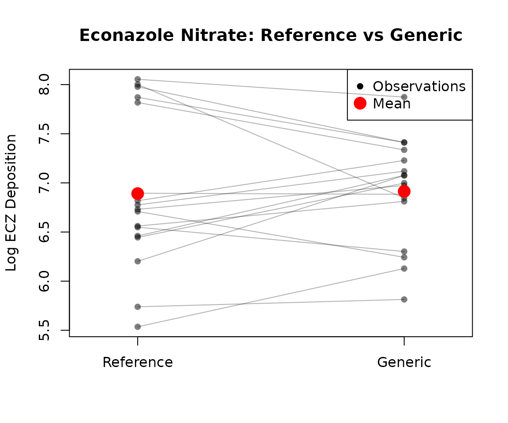
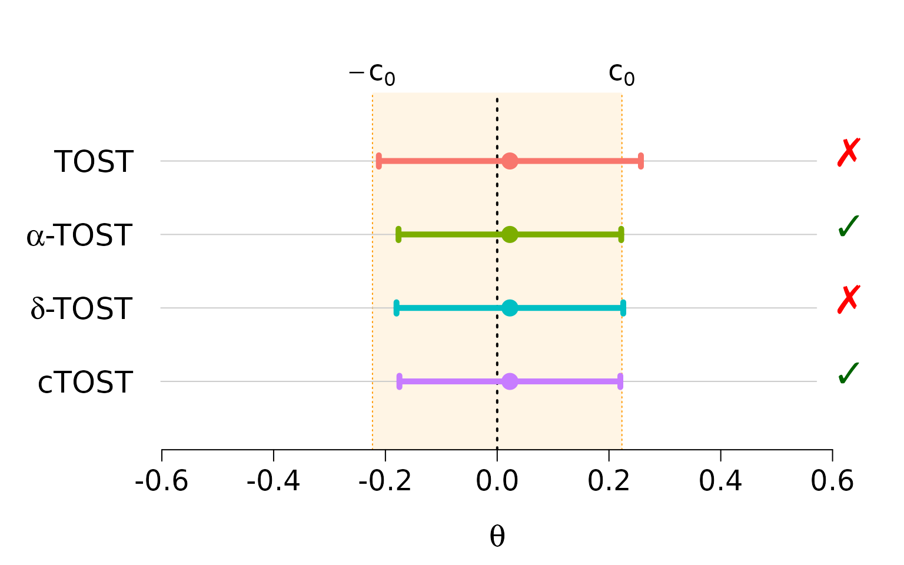

Average Equivalence Testing: Univariate
Source:vignettes/average-equivalence-univariate.Rmd
average-equivalence-univariate.RmdIntroduction
This vignette provides an in-depth guide to univariate average
equivalence testing using the cTOST package. We focus on
testing whether the mean difference between two treatments falls within
a pre-specified equivalence margin.
The Problem
In bioequivalence studies and many other applications, the goal is to demonstrate that two treatments produce equivalent average responses. For example:
- Is a generic drug equivalent to a brand-name drug?
- Are two manufacturing processes equivalent?
- Are two measurement devices equivalent?
The equivalence region is typically , where is chosen based on scientific or regulatory criteria. For bioequivalence studies, FDA guidelines often use .
Available Methods
The ctost() function implements four methods:
-
Unadjusted TOST
(
method = "unadjusted"): Standard two one-sided tests -
Alpha-TOST (
method = "alpha"): Adjusts the significance level (Boulaguiem et al. 2023) -
Delta-TOST (
method = "delta"): Adjusts the equivalence bounds (Boulaguiem et al. 2023) -
Optimal cTOST (
method = "optimal"): Recommended - Provides best power (Insolia et al. 2025)
Statistical Framework
Model Setup
We assume the canonical form for average equivalence testing:
where:
- is the estimated mean difference
- is the variance of
- is the degrees of freedom
The Conservativeness Problem
The standard TOST is known to be conservative in finite samples, meaning:
- The actual type I error rate is less than the nominal
- This leads to reduced power (harder to accept equivalence)
- The problem is worse for:
- Small sample sizes
- Large variability relative to the equivalence margin
The corrected methods (alpha-TOST, delta-TOST, optimal cTOST) address this issue.
Real Data Example: Econazole Nitrate Study
We use the skin dataset from Quartier et al. (2019), which contains
measurements of econazole nitrate deposition from a reference and
generic cream product on porcine skin.
Load and Explore Data
data(skin)
dim(skin)
#> [1] 17 2
head(skin)
#> Reference Generic
#> Obs.1 5.739053 5.813981
#> Obs.2 6.560818 6.811332
#> Obs.3 6.731042 6.973451
#> Obs.4 5.535548 6.128285
#> Obs.5 6.548992 6.301647
#> Obs.6 6.445193 6.998245
summary(skin)
#> Reference Generic
#> Min. :5.536 Min. :5.814
#> 1st Qu.:6.460 1st Qu.:6.811
#> Median :6.731 Median :6.998
#> Mean :6.891 Mean :6.914
#> 3rd Qu.:7.818 3rd Qu.:7.228
#> Max. :8.054 Max. :7.873The data contains 17 paired observations. Let’s visualize the raw data:
# Paired plot
plot(1:2, type = "n", xlim = c(0.8, 2.2), ylim = range(skin),
xlab = "", ylab = "Log ECZ Deposition",
main = "Econazole Nitrate: Reference vs Generic",
xaxt = "n")
axis(1, at = c(1, 2), labels = c("Reference", "Generic"))
# Connect paired observations
for (i in 1:nrow(skin)) {
lines(c(1, 2), skin[i, ], col = rgb(0, 0, 0, 0.3))
points(c(1, 2), skin[i, ], pch = 16, col = rgb(0, 0, 0, 0.5))
}
# Add means
points(c(1, 2), apply(skin, 2, mean), pch = 16, col = "red", cex = 2)
legend("topright", legend = c("Observations", "Mean"),
col = c("black", "red"), pch = 16, pt.cex = c(1, 2))
Compute Test Statistics
For paired data, we compute the mean difference and its standard error:
# Mean difference (Generic - Reference)
theta_hat <- diff(apply(skin, 2, mean))
# Sample size and degrees of freedom
n <- nrow(skin)
nu <- n - 1
# Variance of mean difference
differences <- apply(skin, 1, diff)
sig_hat <- var(differences) / nu
# Summary
cat("Sample size:", n, "\n")
#> Sample size: 17
cat("Degrees of freedom:", nu, "\n")
#> Degrees of freedom: 16
cat("Estimated difference (Generic - Reference):", round(theta_hat, 4), "\n")
#> Estimated difference (Generic - Reference): 0.0227
cat("Standard error:", round(sqrt(sig_hat), 4), "\n")
#> Standard error: 0.1343
cat("Variance:", round(sig_hat, 4), "\n")
#> Variance: 0.018The positive difference suggests the Generic product delivers slightly more econazole than the Reference on average.
Method Comparison
Let’s compare all four methods:
1. Standard TOST (Unadjusted)
standard_tost <- ctost(
theta = theta_hat,
sigma = sig_hat,
nu = nu,
delta = delta,
alpha = 0.05,
method = "unadjusted"
)
print(standard_tost)
#> ✖ Can't accept (bio)equivalence
#> Equiv. Region: |---------------0---------------|
#> Estim. Inter.: (---------------x----------------)
#> CI = (-0.21174 ; 0.25715)
#>
#> Method: TOST
#> alpha = 0.05; Equiv. lim. = +/- 0.22314
#> Mean = 0.02270; Stand. dev. = 0.13428; df = 162. Alpha-TOST
The alpha-TOST increases the significance level to account for conservativeness:
alpha_tost <- ctost(
theta = theta_hat,
sigma = sig_hat,
nu = nu,
delta = delta,
alpha = 0.05,
method = "alpha"
)
print(alpha_tost)
#> ✔ Accept (bio)equivalence
#> Equiv. Region: |----------------0----------------|
#> Estim. Inter.: (---------------x--------------)
#> CI = (-0.17654 ; 0.22194)
#>
#> Method: alpha-TOST
#> alpha = 0.05; Equiv. lim. = +/- 0.22314
#> Corrected alpha = 0.07866
#> Mean = 0.02270; Stand. dev. = 0.13428; df = 16
cat("\nCorrected alpha:", round(alpha_tost$corrected_alpha, 4), "\n")
#>
#> Corrected alpha: 0.07873. Delta-TOST
The delta-TOST enlarges the equivalence bounds (the TOST is conservative, so the corrected margin is always at least as large as the nominal one):
delta_tost <- ctost(
theta = theta_hat,
sigma = sig_hat,
nu = nu,
delta = delta,
alpha = 0.05,
method = "delta"
)
print(delta_tost)
#> ✖ Can't accept (bio)equivalence
#> Corr. Equiv. Region: |----------------0----------------|
#> Estim. Inter.: (--------------x---------------)
#> CI = (-0.21174 ; 0.25715)
#>
#> Method: delta-TOST
#> alpha = 0.05; Equiv. lim. = +/- 0.22314
#> Corrected Equiv. lim. = +/- 0.25473
#> Mean = 0.02270; Stand. dev. = 0.13428; df = 16
cat("\nCorrected delta:", round(delta_tost$corrected_delta, 4), "\n")
#>
#> Corrected delta: 0.25474. Optimal cTOST (Recommended)
The optimal method provides the best power while maintaining type I error control:
optimal_tost <- ctost(
theta = theta_hat,
sigma = sig_hat,
nu = nu,
delta = delta,
alpha = 0.05,
method = "optimal"
)
print(optimal_tost)
#> ✔ Accept (bio)equivalence
#> Equiv. Region: |----------------0----------------|
#> Estim. Inter.: (---------------x--------------)
#> CI = (-0.17492 ; 0.22032)
#>
#> Method: cTOST
#> alpha = 0.05; Equiv. lim. = +/- 0.22314
#> Estimated c(0) = 0.02553
#> Finite sample correction: offline
#> Corrected alpha = 0.03853
#> Mean = 0.02270; Stand. dev. = 0.13428; df = 16Visual Comparison
plot(standard_tost, alpha_tost, delta_tost, optimal_tost)
Interpretation:
- The alpha-TOST and the cTOST accept equivalence, while the standard TOST and the delta-TOST do not
- The alpha-TOST and the cTOST produce narrower confidence intervals; the delta-TOST keeps the TOST interval and widens the equivalence region instead
- The optimal cTOST provides the most efficient inference
Compare to Standard TOST
Use compare_to_tost() to see the improvement:
compare_to_tost(alpha_tost)
#> TOST:
#> ✖ Can't accept (bio)equivalence
#> alpha-TOST:
#> ✔ Accept (bio)equivalence
#>
#> Equiv. Region: |---------------0---------------|
#> TOST: (---------------x----------------)
#> alpha-TOST: (-------------x--------------)
#>
#> CI - low CI - high
#> TOST: -0.21174 0.25715
#> alpha-TOST: -0.17654 0.22194
#>
#> Equiv. lim. = +/- 0.22314Finite Sample Corrections
When Are Corrections Important?
Finite sample corrections are most beneficial when:
- Small sample sizes ()
- High variability relative to the equivalence margin
- Marginal decisions (close to the boundary)
Correction Options
The correction parameter controls additional adjustments
for the optimal cTOST:
-
"offline"(default for univariate): Uses pre-computed corrections -
"bootstrap": Uses bootstrap resampling -
"none": No additional correction
# With offline correction (default)
optimal_offline <- ctost(
theta = theta_hat,
sigma = sig_hat,
nu = nu,
delta = delta,
method = "optimal",
correction = "offline"
)
# Without correction
optimal_none <- ctost(
theta = theta_hat,
sigma = sig_hat,
nu = nu,
delta = delta,
method = "optimal",
correction = "none"
)
cat("With correction:", optimal_offline$decision, "\n")
#> With correction: TRUE
cat("Without correction:", optimal_none$decision, "\n")
#> Without correction: TRUEPractical Guidelines
Choosing a Method
Recommended approach:
-
Default: Use
method = "optimal"withcorrection = "offline" - Large samples (): Any method works well
- Small samples (): Corrections are essential
- Regulatory submissions: Check if specific method is required
Choosing Equivalence Margins
The equivalence margin should be chosen based on:
- Clinical relevance: What difference is scientifically meaningful?
- Regulatory guidelines: FDA/EMA guidance (e.g., for bioequivalence)
- Historical data: Previous studies in the same area
Common choices:
- Bioequivalence:
- Clinical trials: Often or smaller
Sample Size Considerations
For a given equivalence margin and expected variability, you can estimate the required sample size using:
# Example: Using PowerTOST package (not run)
library(PowerTOST)
sampleN.TOST(alpha = 0.05, targetpower = 0.8,
theta0 = 0.95, theta1 = 0.8, theta2 = 1.25)Interpretation of Results
Summary
- Use optimal cTOST (
method = "optimal") for best performance - Finite sample corrections are important for small samples
- Always visualize results with
plot() - Choose equivalence margins based on scientific/regulatory criteria
- Remember: equivalence testing requires a priori specification of
References
For more details on the methodology, see:
- Boulaguiem et al. (2023) for alpha-TOST and delta-TOST
- Insolia et al. (2025) for optimal cTOST
- Quartier et al. (2019) for the econazole data
For multivariate equivalence testing, see the Average Equivalence Testing: Multivariate vignette.